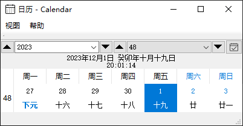

|
农历日历 v1.0.4
|
|
农历日历 v1.0.4
|
一个 Qt 界面的农历日历库，支持 QSS (换肤功能），任务显示。
| 月视图 | 周视图 |
|---|---|

|

|


任务可分为：
由于任务类型众多，所以本项目任务由使用者自行处理， 参见： 使用者自定义任务接口 。
节日。
在项目内维护。详见： 节日表 。 如果使用者不需要默认的，使用者也可以自己维护，
只需要使用下列方法之一：
使用 CLunarCalendar::SetTaskHandle(std::function<uint(const QDate& date, QStringList& tasks)> cbHandler) 处理自定义任务。 需要标准C++11及以后才支持。
注意：